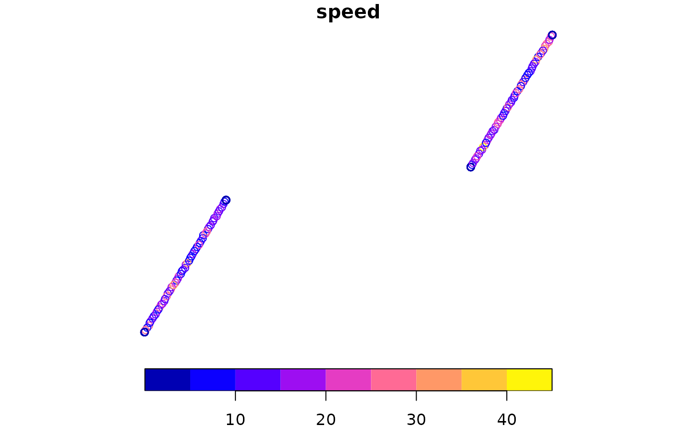

Creates a synthetic sf POINT object with mixed migration and
stationary behaviour for one or more simulated individuals. Each
individual visits two stationary sites (mimicking wintering and
breeding grounds for a migratory bird), connected by a migration
trail. Each stationary site is a tight cluster (sd ~500 m),
providing the spatial-occupancy structure that dbscan_habitats()
delineates at a data-derived scale.
Value
An sf POINT object in EPSG:4326 with columns:
individual: character (e.g.,"ind_01").time: POSIXct, hourly timestamps starting 2023-01-01.speed: numeric, m/s.lon,lat: numeric coordinates (also retained as columns).
Details
Per individual, the breakdown is roughly:
35% of points: wintering site (tight cluster at origin).
35% of points: breeding site (tight cluster, +5 deg lon, +8 deg lat from origin).
30% of points: migration trail connecting the two sites (high-speed, spatially spread).
Used in examples, website articles, and unit tests.
Examples
demo <- make_demo_track()
plot(demo["speed"])
